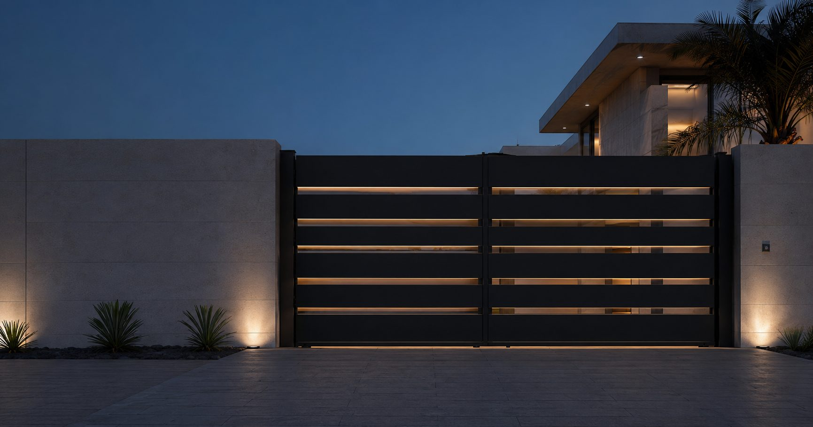
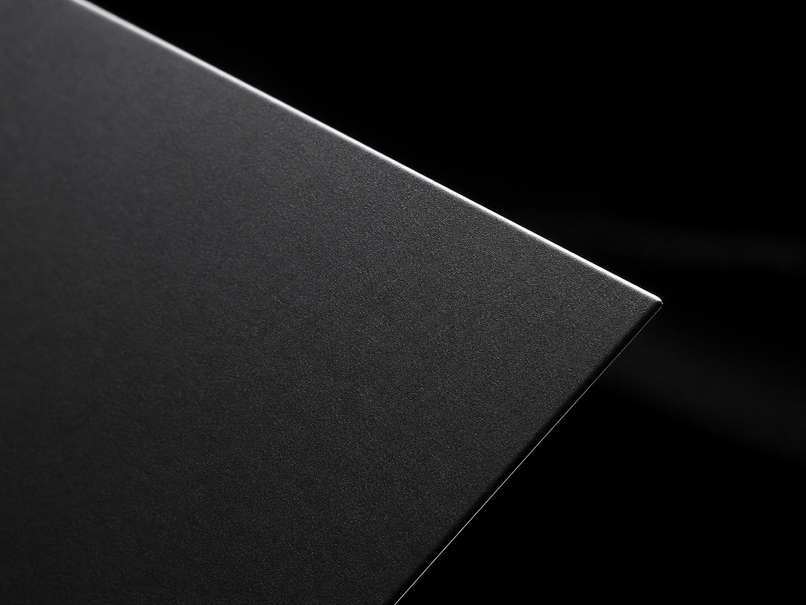
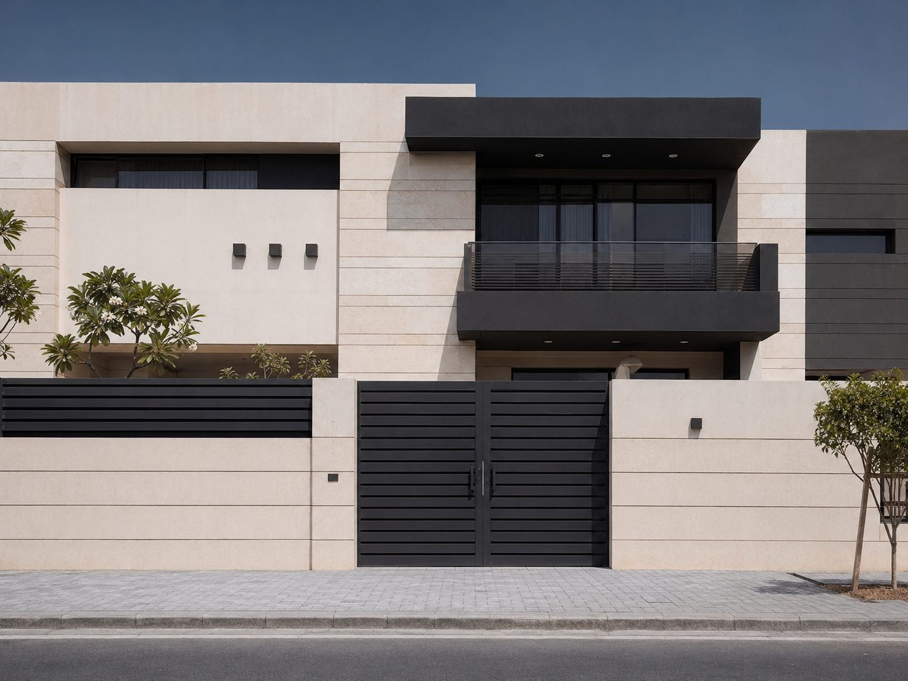
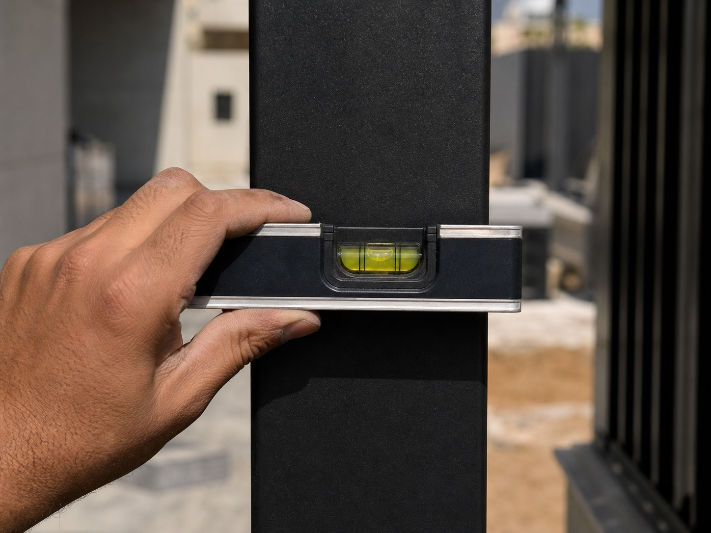

الخدمات · البوابات
بوابتك أول ما يراه أي زائر
بوابات مداخل مفصلية ومنزلقة وكابولية وأوتوماتيكية — مصممة وفق الواجهة، ومبنية على القياس، ومطلية بما يناسب درجة تعرض عقارك فعلًا.

فتحة صافية ٤٢٠٠ ممما نبنيه
أنواع البوابات
بوابات مفصلية
ضلفة واحدة أو ضلفتان. أبسط آلية وأقل صيانة. تحتاج مساحة فتح داخل الأرض.
بوابات منزلقة
تسير على مجرى. الأنسب حين يكون عمق المدخل محدودًا. تحتاج مسارًا خاليًا بمحاذاة السور.
بوابات كابولية
بلا مجرى أرضي، فلا شيء يعلق فيه الرمل أو الأتربة. تحتاج ثقل موازنة أكبر وقاعدة أعرض.
بوابات مشاة
مطابقة للبوابة الرئيسية في الخامة والتشطيب، وعادة بنظام دخول مستقل.
٠١ / المناخ
هل تصمد في البحرين؟
هذا هو السؤال الأهم، وهو الذي تتجنب معظم العروض الإجابة عنه. تقلب الحرارة، ورطوبة تقارب ٨٠٪، وهواء ساحلي محمّل بالملح، ستكشف كل ثغرة في مواصفة ضعيفة.
الحديد أقوى وأقل تكلفة، وهو الخيار الصحيح في الداخل إذا عولج كما يجب — جلفنة بالغمس الساخن أو بطانة زنك، ثم طلاء بودرة بوليستر. الألمنيوم أعلى تكلفة لكنه لا يصدأ، ما يجعله المواصفة الأأمن ضمن بضعة كيلومترات من الساحل.
نخبرك أيهما يناسب موقعك، ونكتب درجة السبيكة ونظام الطلاء ومدة الضمان في العرض. وإن حددنا الحديد قرب الساحل، نشرح السبب.

طلاء ٨٠ ميكرون
محاذاة لخط السور٠٢ / الانسجام مع المبنى
هل تناسب العقار؟
البوابة جزء من الواجهة سواء صُممت لذلك أم لا. يجب أن تلتقط شيئًا موجودًا أصلًا — مداميك السور، أو إيقاع النوافذ، أو خط المدخل — وإلا بدت دائمًا وكأنها مركّبة عليها.
نعمل من مقاساتك ومن هندسة المبنى نفسه: كثافة التعبئة للخصوصية، واتجاه الشرائح، ونسب الإطار، وكيف تُرى البوابة من الشارع مقابل رؤيتها من الباب. وخيارات التشطيب تمتد من الأسود المطفي إلى الألمنيوم المؤكسد وبمظهر الخشب.
٠٣ / الموثوقية
ما يحويه عرض السعر فعلًا
معظم عروض البوابات في هذا السوق سعر وجملة. عرضنا يسمّي ما تشتريه، لتقارن بشكل صحيح — بما في ذلك مقارنتنا نحن.
الخامة ودرجتها
درجة السبيكة أو الحديد، ومقاسات القطاعات، ونوع التعبئة وسماكتها. لا "معدن عالي الجودة".
نظام الطلاء
التحضير والبطانة والطبقة النهائية وسماكة الغشاء — وهو ما يحدد إن كانت ستدوم ثلاث سنوات أو خمس عشرة.
المكوّنات وأنظمة التشغيل
نوع المفصلات أو البكرات، وماركة المحرك وطرازه، وحواف الأمان، وتجهيز جهاز التحكم والإنتركم.
الضمان ومدة التنفيذ
مدة محددة ضد فشل الطلاء وعيوب الآلية، ونافذة تسليم نلتزم بها.
٠٤ / التركيب
هل سيكون التركيب نظيفًا؟
البوابة التي تهبط أو تحتك أو تخرج عن التعامد هي غالبًا مشكلة تركيب لا مشكلة تصنيع. ومستوى الأرض عبر المدخل نادرًا ما يكون مستويًا كما يبدو.
نفحص الميزان والميلان عبر الفتحة قبل التصنيع، ونضبط القوائم على مرجع متحقق منه، ونحمي الأسطح المنتهية أثناء التثبيت، ونختبر كامل الحركة ودورة التشغيل قبل مغادرتنا. ويُكنس الموقع ويُخلى، وتحصل على صور التسليم.

ميزان مثبت ± ١ ممأسئلة عن البوابات
قبل أن تلتزم
يحدده موقعك لا تفضيلك. المفصلية تحتاج مساحة خالية داخل الأرض لتفتح الضلف. والمنزلقة تحتاج مسارًا خاليًا بمحاذاة السور. وإن لم يتوفر أي منهما، تحل الكابولية المشكلة بتكلفة أعلى. وسنخبرك بما يسمح به مدخلك.
غالبًا نعم — إذا كان الإطار متعامدًا والمفصلات أو البكرات سليمة والهيكل يتحمل حمل المحرك. نقيّم ذلك بصراحة. فأتمتة بوابة تحتك أصلًا لا تفعل شيئًا سوى إتلاف المحرك.
العرض والخامة وكثافة التعبئة ونظام الطلاء والأتمتة، كل منها يحرّك الرقم كثيرًا — فبوابة حديد مفصلية بسيطة ليست المنتج نفسه لبوابة ألمنيوم منزلقة عريضة وأوتوماتيكية. أرسل المقاسات ونعطيك رقمًا حقيقيًا بدل نطاق لا يعني شيئًا.
كثير من المجمعات المُدارة لديها ضوابط خاصة بالواجهات تشمل الارتفاع والطراز والارتداد. سنسألك عن مجمعك ونعمل ضمن قواعده — فالتصميم وفقها أسهل من تعديل بوابة منتهية.
أرسل عرض الفتحة، ونحن نتولى الباقي.
صورة للمدخل ومقاس تقريبي يكفيان للبدء. وسنعود إليك بنصيحة في الخامة والآلية قبل التسعير.
اطلب سعر بوابة →